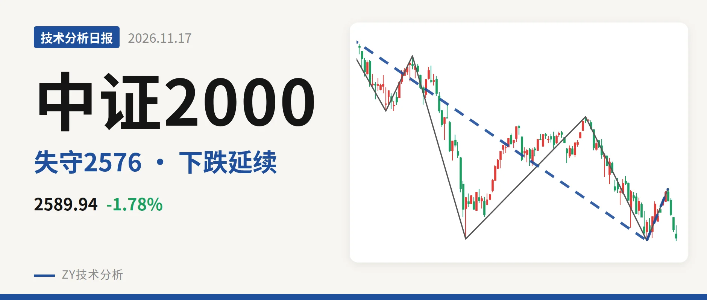
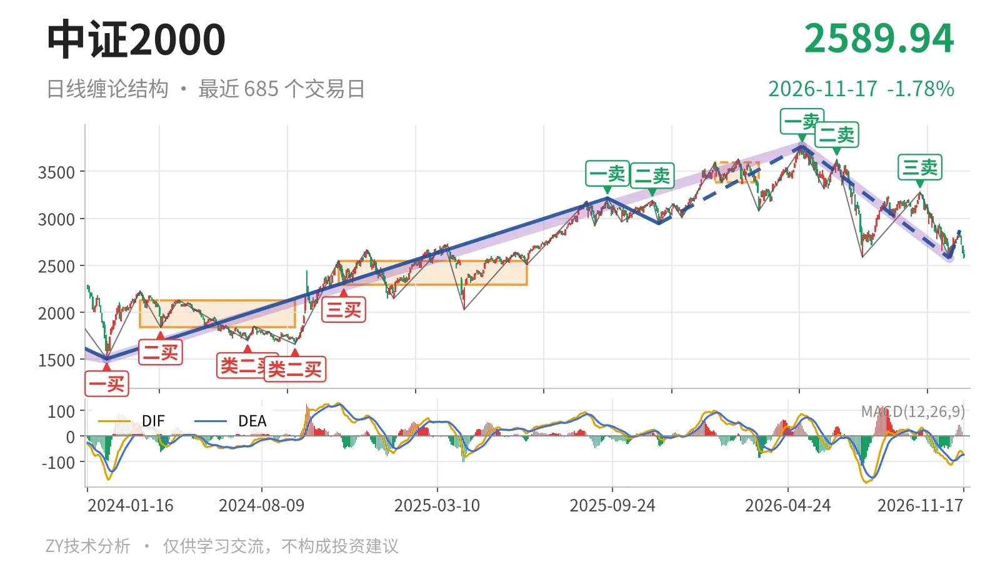

中证2000｜2576点失守，反弹笔坏

最近日线中枢 3381.36—3593.19点，收盘位于中枢之下
一句话：日线三卖后下跌未结束，2576点失守，反弹笔被破坏
📉 走势结构：三卖后下跌仍在延续
日线上，当前主要结构是5月14日以来的下跌线段，该线段仍没有结束。更大级别上，5月14日至11月2日的下跌走势也在延续。11月2日至11月12日只是从2576.02点到2872.13点的一笔反弹，还不构成日线线段。11月13日至17日最低下探2573.21点，已跌破2576.02点，这一笔反弹被破坏，说明9月22日三卖后的下跌没有被逆转。

📍 中枢与位置：最近中枢已被向下击穿
最近一个日线笔中枢是1月26日至3月23日的3381.36—3593.19点，当前尚未完成。最新收盘2589.94点在该中枢下方，较下沿3381.36点低约23.4%，已经明显脱离中枢。此前2024年11月12日至2025年6月23日的中枢区间为2293.12—2547.90点，当前价格已回到其上沿2547.90点上方附近；近一年日线笔中枢先上移到3381—3593点，现在又被反向击穿。
🔻 买卖点：9月22日三卖压力明确
日线笔级别上，5月14日一卖3768.08点、6月23日二卖3626.48点、9月22日三卖3280.29点，位置一个比一个低。9月22日三卖后，反弹高点只有2872.13点，没有回到3280点上方，更未触及3381点，回抽不进中枢。11月2日的线段级别类二买2576.02点只是暂定的类二买，最新已跌破该位，因此它只对应较小级别，随下跌延续而变化，不能作为日线转折依据。

⚡ 背驰：价格新低，力度未同步衰竭
最值得比较的是最近一段完整下跌笔9月22日至11月2日，与6月23日至7月21日下跌笔。后者绿柱面积810、DIF低点-164.2；前者绿柱面积873、DIF低点-108.5。价格创2576.02点新低，DIF低点反而抬高，但绿柱面积未同步收缩，标准“新低不新弱”还不成立，下跌动能没有完全衰竭。11月13日后反弹笔被破坏，新的下跌笔还没走完，背驰要等这一笔的绿柱面积与DIF低点出来后再比较。
🔎 关键位置观察：先看2872点与2576点
上方，11月2日至12日反弹高点2872.13点是最近的短线结构位，反抽若回不到2872点上方，三卖后的下跌中继结构不变；重新站上3280点甚至3381点，才可能改变三卖压制，回到最近中枢下沿附近。下方，2576.02点已失守，若不能快速收回2576点上方，9月22日以来的下跌笔还会延续；若收回2576点上方，则转入低位震荡。当前结构弱在：价格远离3381点中枢下沿，反弹笔被破坏，背驰也未完成。
⚠️ 本文为基于公开行情数据的缠论技术结构记录，由程序自动计算并生成，仅供学习交流，不构成任何投资建议。市场有风险，投资需谨慎。